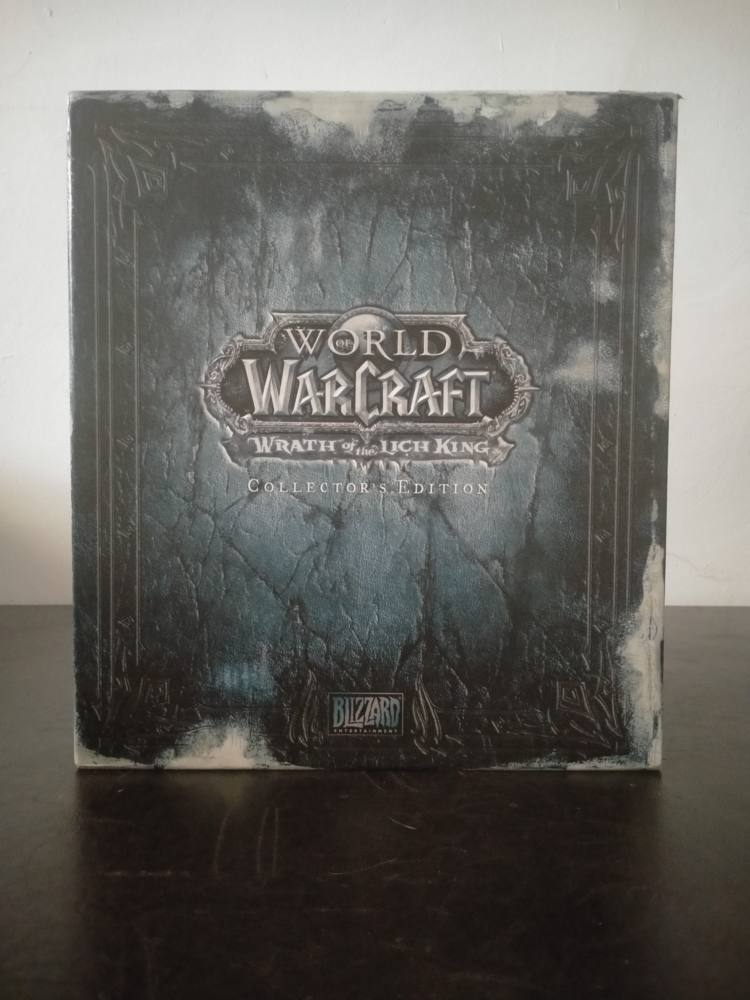

Ficha #000136
World of Warcraft: Wrath of the Lich King - Collector's Edition
Edición coleccionista de World of Warcraft: Wrath of the Lich King, segunda expansión del juego de rol multijugador masivo en línea de Blizzard Entertainment, publicada en 2008 para Windows y Mac OS X. Requiere World of Warcraft y The Burning Crusade, además de una cuenta activa y conexión a los servidores del servicio. La expansión abre el continente de Rasganorte, desarrolla el enfrentamiento con Arthas Menethil como Rey Exánime, eleva el nivel máximo a 80 e introduce la clase heroica Caballero de la Muerte, el sistema de logros, nuevas bandas y mazmorras y un uso destacado de la tecnología de fases para modificar el entorno según el progreso narrativo. La Collector's Edition conserva un conjunto especialmente amplio de materiales físicos y audiovisuales, incluidos libro de arte, banda sonora, documental, alfombrilla-mapa y componentes del juego de cartas, por lo que constituye una edición relevante para documentar el auge comercial y cultural de los juegos multijugador persistentes y de las ediciones de coleccionista para PC de finales de los años 2000. ([Macworld][1])
- Formato
- Big Box
- Plataforma
- WinXP Windows Vista MacOs
- Género
- Rol multijugador masivo en línea (MMORPG) Fantasía Expansión
- Serie
- Todos Big Box World of Warcraft
- Desarrollador
- Blizzard Entertainment
- Distribuidor
- Blizzard Entertainment
- EAN
- —
Contenido de la edición
- Caja rígida de edición coleccionista con bandeja interior
- DVD-ROM de World of Warcraft: Wrath of the Lich King para PC y Mac
- Manual y clave de producto
- Libro de arte The Art of World of Warcraft: Wrath of the Lich King de 208 páginas
- DVD Entre bastidores
- CD de la banda sonora oficial con 21 pistas y temas adicionales
- Alfombrilla de ratón con mapa de Rasganorte
- Dos mazos de inicio de World of Warcraft Trading Card Game: March of the Legion
- Dos cartas exclusivas de World of Warcraft Trading Card Game
- Mascota exclusiva Frosty, cría de vermis de escarcha, vinculada a la edición ([Wowpedia][2])
Preservación
- Protección
- Código o clave
- Formato recomendado
- ISO
- Jugable en virtualización
- Sí
Preservar el DVD-ROM del cliente como imagen ISO, el DVD adicional como ISO y el CD de audio como BIN/CUE, junto con escaneos del manual, la clave, las cartas y el resto de materiales. La clave puede estar ya canjeada y la versión histórica del cliente depende de autenticación y servicios remotos; el cliente puede ejecutarse en una máquina virtual compatible, pero la reproducción funcional de la experiencia original requiere además un servidor compatible y no queda garantizada únicamente con los soportes físicos.